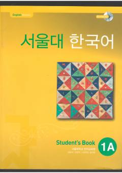

SNSeul Milliy Universitetining koreys tili bo'yicha boshlang'ich darajadagi darsligi.
Ushbu kitob Seul Milliy Universitetining Til ta'limi instituti tomonidan koreys tilini o'rganuvchilar uchun maxsus ishlab chiqilgan darslikdir. U koreys tilini boshlang'ich darajada o'zlashtirish uchun zarur bo'lgan grammatika, lug'at va muloqot ko'nikmalarini qamrab oladi.